What Moves Markets?
This page gives a basic overview of the event database from the paper "What Moves Markets?" by Mark Kerssenfischer and Maik Schmeling
Notes:
- All intraday timestamps refer to Greenwich Mean Time (GMT), i.e without daylight saving time offset
- The database currently contains three types of events: 1) auctions, 2) central bank announcements and 3) ad hoc events. Auctions include announcements and results for the US and Germany and are taken from the websites of the US Treasury and the German Finance Agency. Central bank announcements cover eight major central banks. Ad hoc events include natural catastophies, rating events, etc.
- The database does currently not contain events from Bloomberg, such as macroeconomic data releases and auctions in France, Italy and Spain
Contents
Data Format
display first event of each type
eventstart eventend type subtype subsubtype description source scheduled
________________ ________________ ____________ ______________________________ ________________________ _______________________________________________________________________________________________________________________________________________________________________________________________________ ______________________________________________________________________________________________________________________________________________________________ _________
04.03.2002 16:30 NaT Auction US Announcement Bill CUSIP 912795JN2 "https://www.treasurydirect.gov/instit/annceresult/press/press.htm" true
05.03.2002 05:00 NaT Central Bank BoJ Minutes Minutes on January 15/16 Meeting "" true
05.03.2002 14:00 NaT Central Bank BoC Press Release - "" true
05.03.2002 18:00 NaT Auction US Result Bill CUSIP 912795JN2 "https://www.treasurydirect.gov/instit/annceresult/press/press.htm" true
05.03.2002 22:30 NaT Central Bank RBA Press Release - "" true
06.03.2002 19:00 NaT Central Bank Fed Beige Book Beige Book Release "" true
07.03.2002 12:00 NaT Central Bank BoE Press Release MPD "" true
07.03.2002 12:45 NaT Central Bank ECB Press Release GCM PR: no change "" true
07.03.2002 13:30 07.03.2002 14:08 Central Bank ECB Press Conference GCM PC "" true
07.03.2002 15:00 07.03.2002 17:35 Central Bank Fed Speech by Chair Greenspan Senate Testimony (Monetary Policy Report) "https://www.govinfo.gov/content/pkg/CHRG-107shrg80301/pdf/CHRG-107shrg80301.pdf" true
14.03.2002 09:00 NaT Central Bank ECB Economic Bulletin Monthly Bulletin "" true
19.03.2002 08:00 NaT Central Bank Riksbank Press Release Repo Rate Decision: 25bp hike to 4.0 percent "" true
19.03.2002 19:15 NaT Central Bank Fed Press Release FOMC Statement: Rates unchanged "" true
20.03.2002 04:35 NaT Central Bank BoJ Press Release BoJ: MP unchanged. The Bank of Japan will conduct money market operations, aiming at the outstanding balance of the current accounts at the Bank at around 10 to 15 trillion yen. "" true
20.03.2002 09:30 NaT Central Bank BoE Minutes Minutes "" true
20.03.2002 19:30 NaT Auction US Announcement Note CUSIP 912828AA8 "https://www.treasurydirect.gov/instit/annceresult/press/press.htm" true
21.03.2002 13:00 NaT Central Bank SNB Press Release Unchanged monetary policy - target range for the three-month Libor rate remains at 1.25%-2.25% "https://www.snb.ch/en/mmr/reference/pre_20020321/source/pre_20020321.en.pdf" true
21.03.2002 19:00 NaT Central Bank Fed Minutes FOMC Meeting Minutes "" true
22.03.2002 05:00 NaT Central Bank BoJ Monthly Report Monthly Report of Recent Economic and Financial Developments: The Bank's View "" true
27.03.2002 18:00 NaT Auction US Result Note CUSIP 912828AA8 "https://www.treasurydirect.gov/instit/annceresult/press/press.htm" true
29.03.2002 19:00 NaT Central Bank Fed Discount Rate Minutes Discount Rate Minutes "" true
08.04.2002 09:00 NaT Central Bank Riksbank Minutes Minutes from 18 March 2002 "" true
18.04.2002 15:48 18.04.2002 16:45 Ad Hoc Other Unscheduled Event - An airplane crashes into a skyscraper in Milan, Italy, raising fears of a terrorist attack because of the similarities with the 9/11 attacks. "https://en.wikipedia.org/wiki/2002_Pirelli_Tower_airplane_crash" false
19.04.2002 11:45 NaT Central Bank ECB Speech by President Duisenberg: Some remarks on the euro in a US context "ECB/Bloomberg" false
26.04.2002 08:00 NaT Central Bank Riksbank Press Conference PC "" true
15.05.2002 09:30 15.05.2002 10:30 Central Bank BoE Inflation Reports Quarterly Inflation Report "" true
14.06.2002 08:00 14.06.2002 09:30 Central Bank SNB Press Conference PC "" true
20.09.2002 10:00 NaT Central Bank BoE Speech by Governor George: "there is a reasonable prospect that global demand will pick up gradually" "https://www.bankofengland.co.uk/-/media/boe/files/speech/2002/edward-george-west-midlands-conference.pdf?la=en&hash=06AFC3A65579A2E1253CD99C6EACAC61972A5736" false
22.09.2002 16:00 NaT Ad Hoc Iraq War - Having voiced strong anti-war views during the campaign, Gerhard Schroeder wins German election. "Wolfers & Zitzewitz (2009)" false
24.10.2002 12:36 24.10.2002 13:30 Central Bank ECB Ad Hoc Press Release PR: ECB to make stability pact statement; "Problems have arisen not because the rules are inflexible, but as a result of some countries' unwillingness to honour their commitment to respect the rules" "https://www.ecb.europa.eu/press/pr/date/2002/html/pr021024_1.en.html" false
26.10.2002 16:00 NaT Central Bank ECB Statement by GC member Bundesbank's Welteke in Spiegel interview: political pressure on ECB make rate cut harder "" false
30.10.2002 05:45 NaT Central Bank BoJ Ad Hoc Press Release MP eased. CAB increased to ¥15-20 tr "" false
19.12.2002 11:17 NaT Auction German Issuance Plan - Release of Yearly Issuance Plan "http://www.deutsche-finanzagentur.de/de/institutionelle-investoren/primaermarkt/auktionsergebnisse/" true
17.03.2003 17:15 NaT Central Bank SNB Speech by Chair Roth: "We can raise liquidity in the system also in case of interest rates at 0%" "" false
17.07.2003 06:00 17.07.2003 07:00 Central Bank BoJ Press Conference Bank of Japan Governor Fukui Speaks at Press Conference "" true
24.09.2003 12:02 NaT Ad Hoc OPEC - OPEC meeting: cut production by 0,9 mbpd "https://global.factiva.com/redir/default.aspx?P=sa&an=LBA0000020030924dz9o001jv&cat=a&ep=ASE" false
22.07.2004 15:00 NaT Auction US Announcement Bond CUSIP 912810FR4 "https://www.treasurydirect.gov/instit/annceresult/press/press.htm" true
27.07.2004 17:00 NaT Auction US Result Bond CUSIP 912810FR4 "https://www.treasurydirect.gov/instit/annceresult/press/press.htm" true
05.01.2005 10:05 NaT Auction German Result Note ISIN DE0001135267 "http://www.deutsche-finanzagentur.de/de/institutionelle-investoren/primaermarkt/auktionsergebnisse/" true
10.01.2005 10:05 NaT Auction German Result Bill ISIN DE0001114759 "http://www.deutsche-finanzagentur.de/de/institutionelle-investoren/primaermarkt/auktionsergebnisse/" true
26.01.2005 10:05 NaT Auction German Result Bond ISIN DE0001135275 "http://www.deutsche-finanzagentur.de/de/institutionelle-investoren/primaermarkt/auktionsergebnisse/" true
02.05.2006 10:47 NaT Ad Hoc Sovereign Credit Ratings - Fitch Upgrade and stable outlook for Belgium "" false
09.01.2007 08:00 NaT Central Bank SNB Quarterly Bulletin Quarterly Bulletin (Monetary Policy Report - Economic Situation) "" true
24.07.2007 12:05 NaT Ad Hoc Global Financial Crisis - Countrywide Financial Corporation warns of “difficult conditions.” "Cayon et al. (2014)" false
17.08.2007 12:30 NaT Central Bank Fed Ad Hoc Press Release Federal Reserve Board Statement: reduce primary credit rate from 6.25% to 5.75%; allow the provision of term financing for as long as 30 days, renewable by the borrower "" false
11.03.2008 11:00 NaT Central Bank BoE Ad Hoc Press Release PR: continuation of expanded 3-month long term repo open market operations against a wider range of high quality collateral "http://web-old.archive.org/web/20120803145615/http://www.bankofengland.co.uk/markets/Documents/money/documentation/announcement080311.pdf" false
14.07.2009 09:53 14.07.2009 10:04 Ad Hoc European Sovereign Debt Crisis - In comments to the press, Irish CB chief John Hurley warned that taxpayer would have to take a hit in purchasing loans from the banks in order to help restore financial stability. "Bahaj (2019)" false
12.08.2010 08:28 NaT Central Bank BoJ Speech by Governor Shirakawa: There are substantial fluctuations in the foreign exchange and stock markets. BoJ will carefully monitor such developments "" false
27.04.2011 18:15 27.04.2011 19:15 Central Bank Fed Press Conference FOMC Press Conference "" true
28.06.2013 12:00 NaT Central Bank Fed Statement by FOMC member Stein: "economic fundamentals have improved since start of QE3" "https://www.federalreserve.gov/newsevents/speech/stein20130628a.htm" false
19.02.2015 12:30 NaT Central Bank ECB Accounts Monetary Policy Accounts "" true
06.08.2015 11:00 06.08.2015 11:45 Central Bank BoE Press Conference MPD, Minutes, Inflation report (first "Super Thursday") "" true
07.01.2016 23:50 NaT Central Bank BoJ Summary of Opinions Summary of Opinions "" true
04.12.2016 22:23 NaT Ad Hoc Trump - Tweet: Did China ask us if it was OK to devalue their currency (making it hard for our companies to compete) heavily tax our products going into.. "Twitter for Android" false
31.01.2020 17:36 NaT Ad Hoc Covid-19 - Trump Weighs Tighter China Travel Restrictions In Response To Coronavirus - Washington Post "Trump Weighs Tighter China Travel Restrictions In Response To Coronavirus - Washington Post" false
Number of Events by Type
Auction Central Bank Ad Hoc Total
_______ ____________ ______ _____
10471 4540 1165 16176
Number of Events by Subtype
For each type of event, show a "treemap" of subtypes and, if available, subsubtypes. The areas correspond to the number of events.
|||||||||||||||||||||||||||||||||||||||||||||||||| Event Type: Ad Hoc ||||||||||||||||||||||||||||||||||||||||||||||||||

|||||||||||||||||||||||||||||||||||||||||||||||||| Event Type: Auction ||||||||||||||||||||||||||||||||||||||||||||||||||
 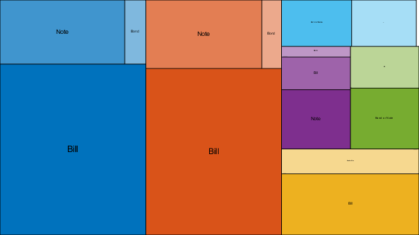
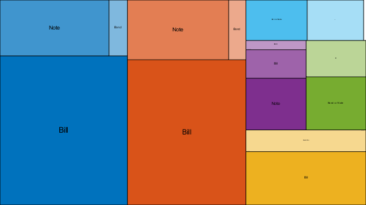 |||||||||||||||||||||||||||||||||||||||||||||||||| Event Type: Central Bank ||||||||||||||||||||||||||||||||||||||||||||||||||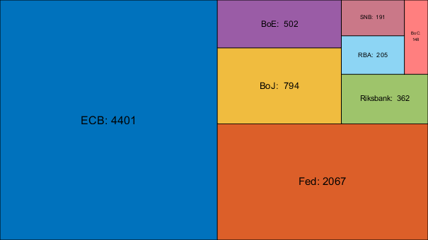
Events over Time
Number of monthly events for each type:

Number of quarterly events for each subtype:


Central Bank Announcements over Time
number of quarterly events for each central bank
 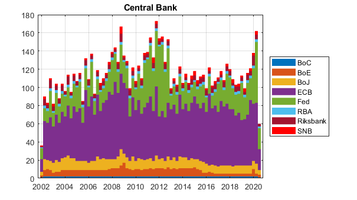 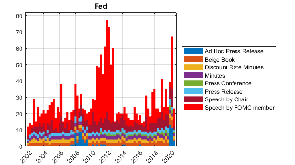 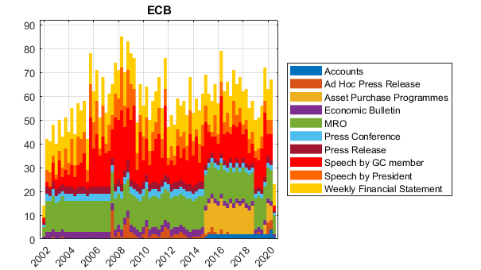
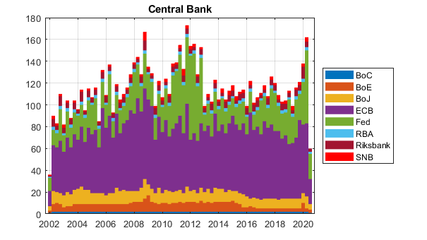 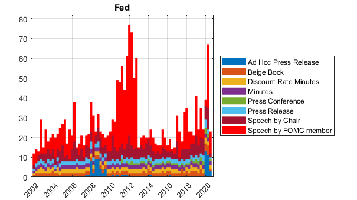 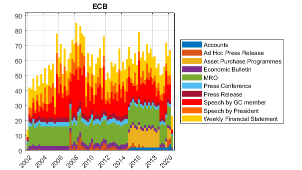  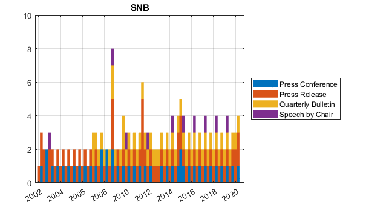
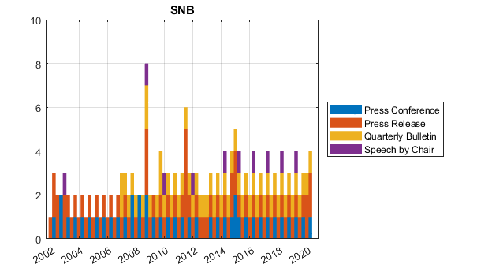 Central Bank Announcements by Intraday Time
number of events by hour of the day
Types of Announcements by Intraday Time for each Central Bank
number of events by hour of the day
 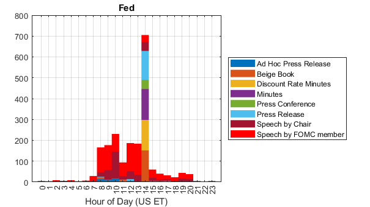
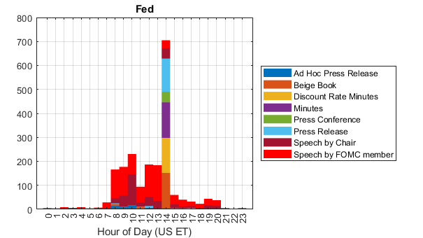